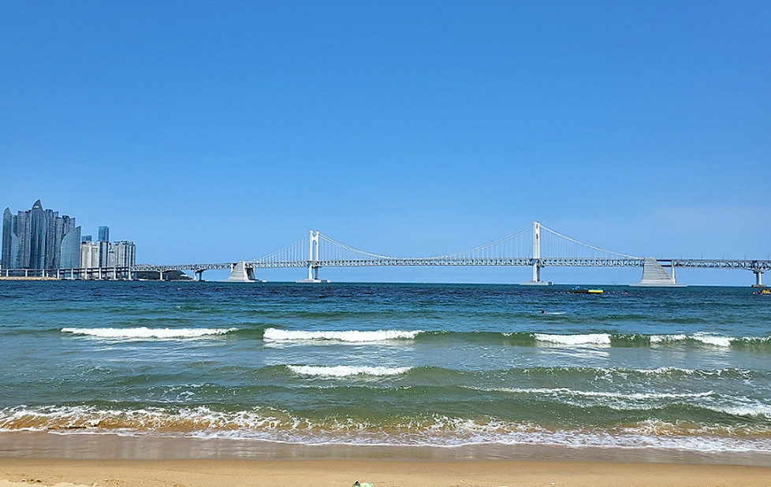
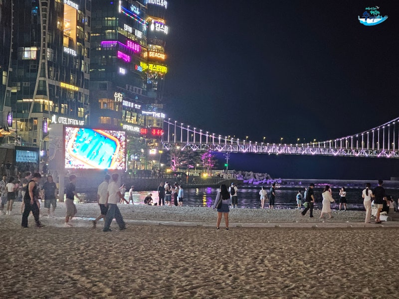

RESOURCE 01자연·경관 관광 자원
광안리해수욕장
낮의 푸른 바다부터 광안대교 야경까지
이어지는 부산의 도심 해변
- 지역
- 부산광역시 수영구 광안해변로 219
- 대표 즐길거리
- 해변 산책, 광안대교 야경,
드론쇼 감상 - 추천 방문 시기
- 사계절 일몰 전부터 야간
VIEW DETAILS ↗
01 / RESEARCH & PLANNING
관광 자원의 가능성을 발견하고
콘텐츠의 방향을 설계합니다.
RESOURCE LIST
지역의 장소와 이야기를 조사하고 콘텐츠로 발전시킬 핵심 포인트를 구조화합니다.
| No. | 관광 자원명 | 지역 | 유형 | 핵심 특징 |
|---|---|---|---|---|
| 001 | 광안리해수욕장 | 수영구 광안해변로 | 자연·경관 | 광안대교 야경과 해변 문화가 이어지는 부산 대표 바다 |
| 002 | 깡깡이마을 | 영도구 대평동 | 역사·문화 | 부산에서 100년 넘게 들린 소리 |
| 003 | 영도공간 307 | 영도구 해양로 | 체험·레저 | 바닷가 창고 속 무료 디지털 놀이터 |
SELECTED RESOURCE
각 장소의 핵심 정보와 주변 추천을 한눈에 확인할 수 있습니다.
낮의 푸른 바다부터 광안대교 야경까지
이어지는 부산의 도심 해변
VIEW DETAILS ↗
“부산에서 100년 넘게
들린 소리”
VIEW DETAILS ↗
“영도 바닷가 창고 안에 숨겨진
무료 디지털 놀이터”
VIEW DETAILS ↗
일치하는 관광 자원이 없습니다.
CONTENT PLANNING
지역과 타깃을 이해하고 아직 발견되지 않은 관광 자원의 매력을 찾습니다.
조사한 자료를 기반으로 콘텐츠의 메시지와 채널별 역할을 정합니다.
카드뉴스와 영상으로 이야기를 구체화하고 일관된 경험을 완성합니다.
낮의 푸른 바다부터 광안대교 야경까지 이어지는 부산의 도심 해변


사진 출처: 한국관광공사
LOCATION & GUIDE
방문 전 현장 상황을 확인해 주세요.
EXPERIENCE
VISITOR REVIEW
방문자 만족도
NEARBY COURSE